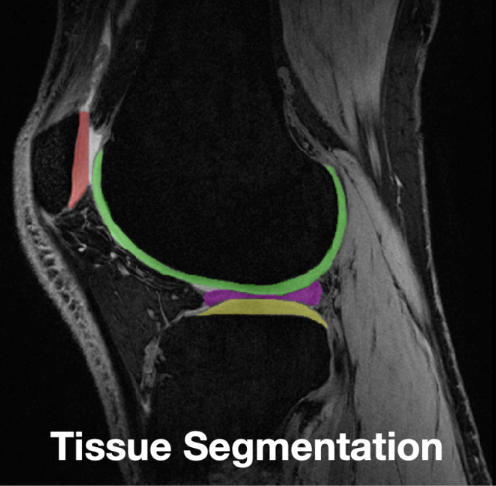
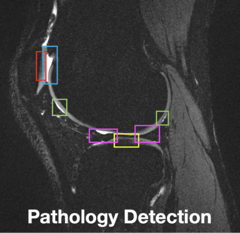

Empowering radiologists in delivering timely and precise interpretations of magnetic resonance imaging (MRI) scans through automated tissue segmentation and pathology detection


Currently, radiologists manually segment and detect potential diseases by iterating through each individual slice of an MRI scan. A single MRI scan can contain anywhere from dozens to hundreds of slices. This process is extremely time-intensive and subject to inter- and intra-observer variations such as image artifacts (ex. from motion), low tissue contrast. etc. This limits the use of routine MRI use in clinical practice.
Our product uses new-age machine learning techniques to automatically segment tissues and detect potential pathologies in MRI scans. Our segmentation model is a pretrained U-Net model, trained by researchers at Purdue University. Our pathology model is the Segment Anything Model (SAM), a popular segmentation model created by researchers at Meta.